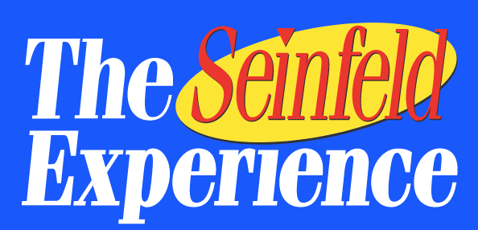
I worked with creative directors, brand managers, and designers at Superfly to develop the voice, content, and marketing for The Seinfeld Experience, an immersive installation celebrating the iconic TV show.
Drawing on my deep knowledge of Seinfeld and broader pop culture, I generated comedic creative marketing concepts and content for social media, email marketing, and the official website. This included conceptualizing and developing content series that referenced beloved moments from the show and recontextualizing them for the modern day.
I also created tone of voice guidelines to ensure brand consistency across all marketing collateral.
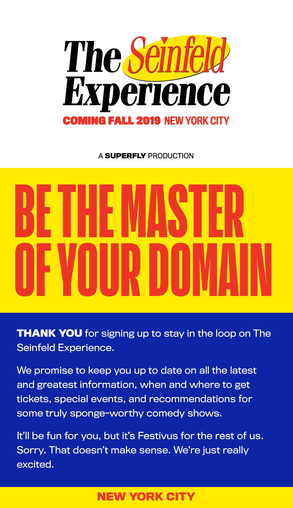
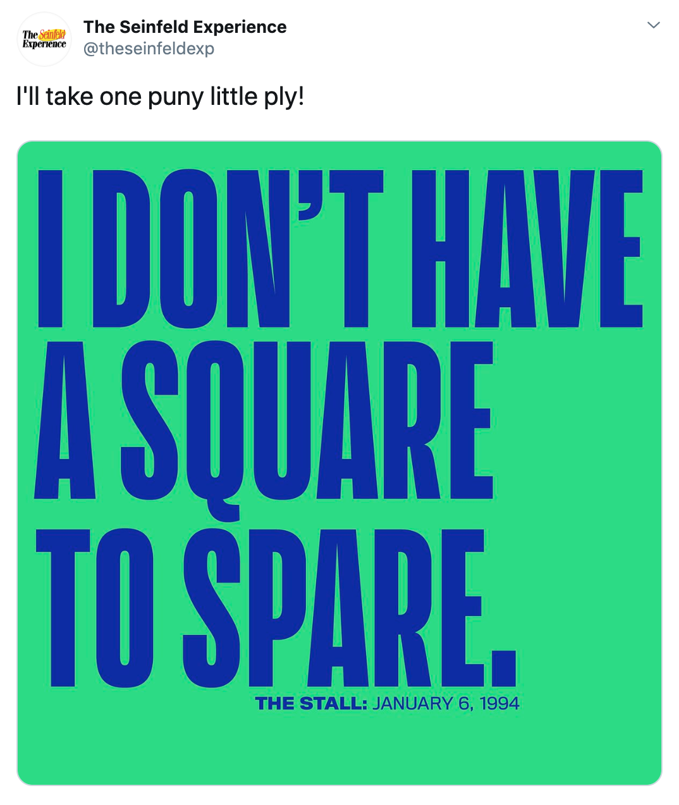
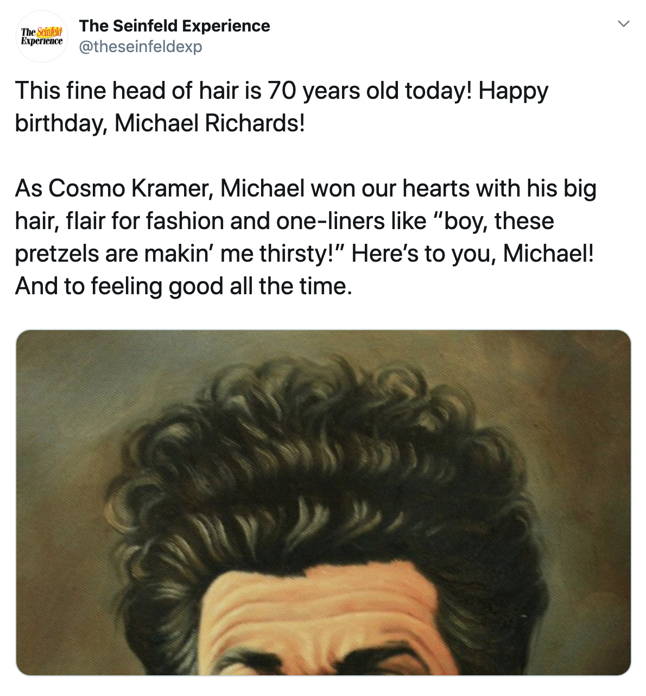
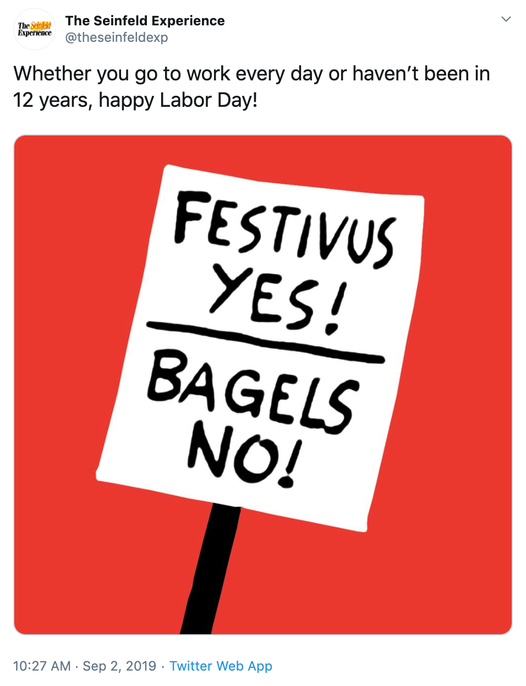
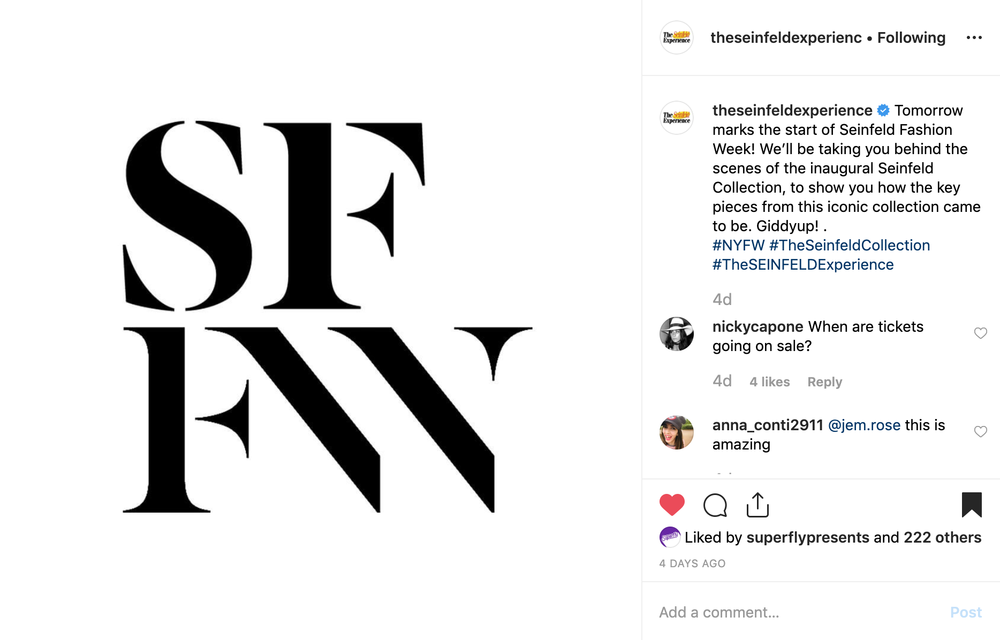
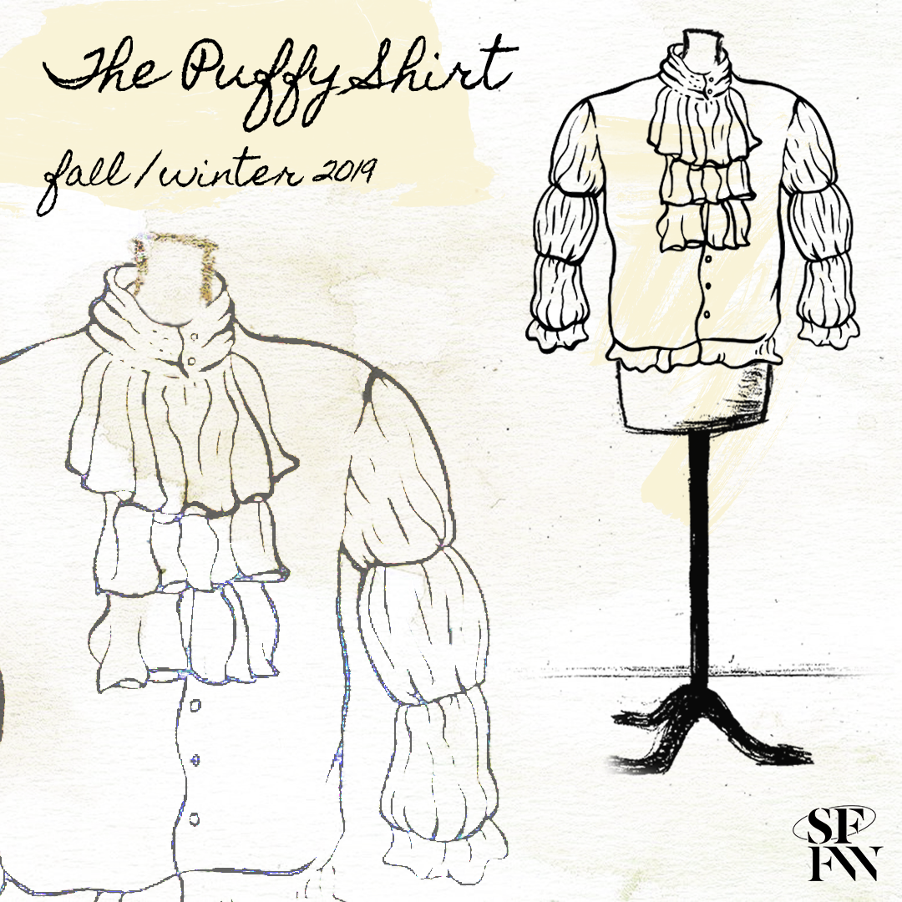
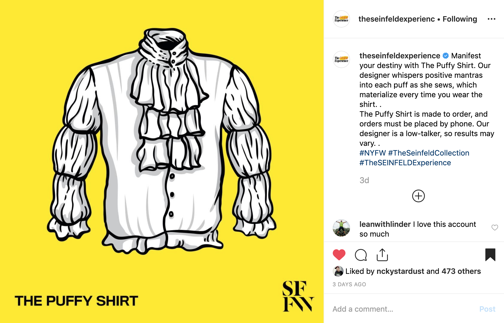
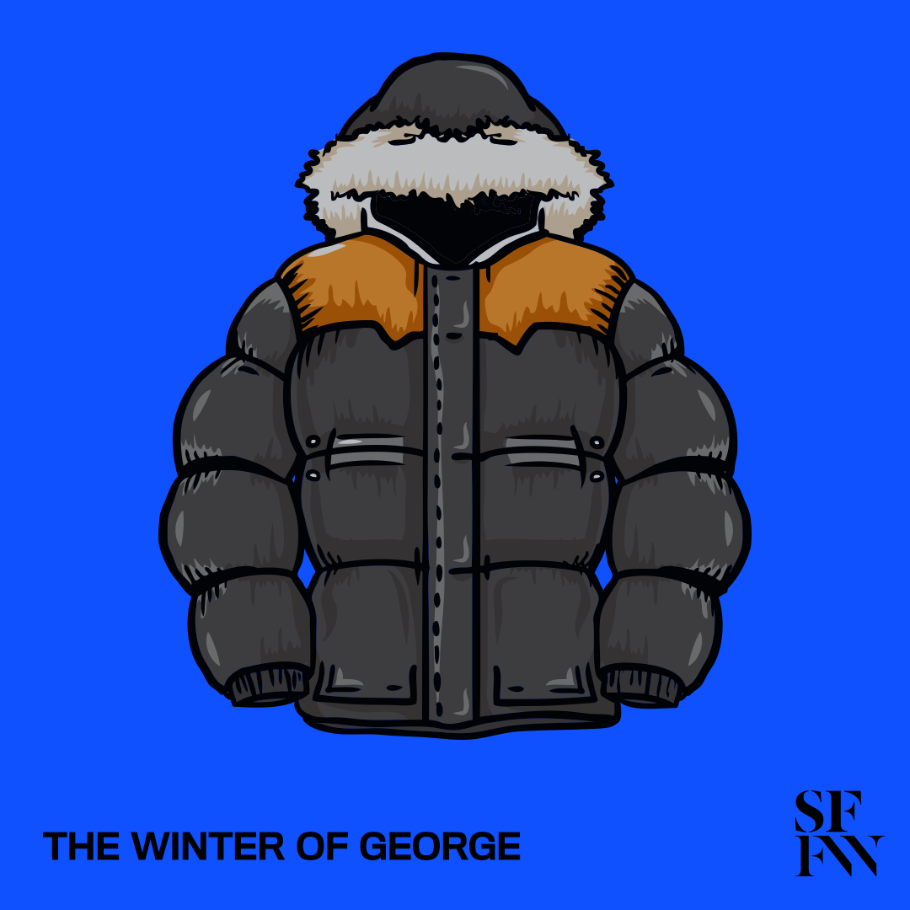
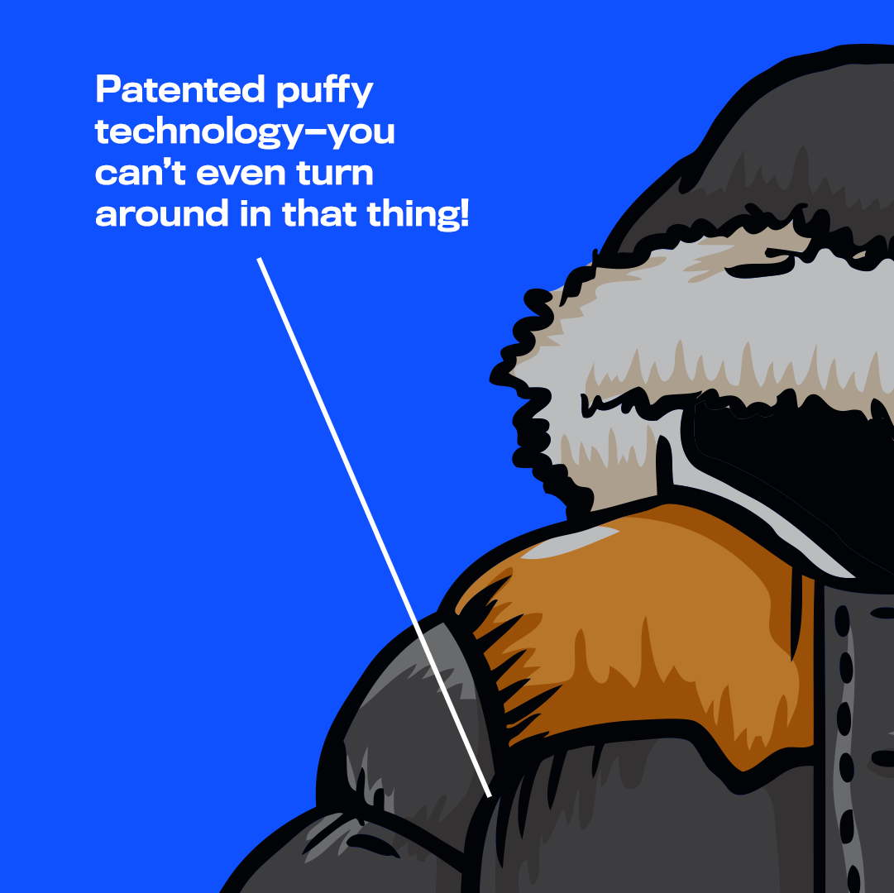
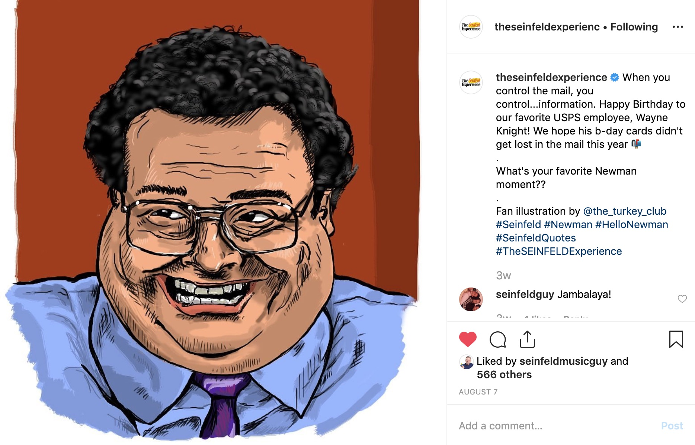